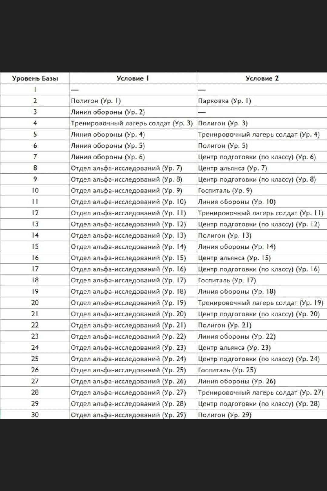
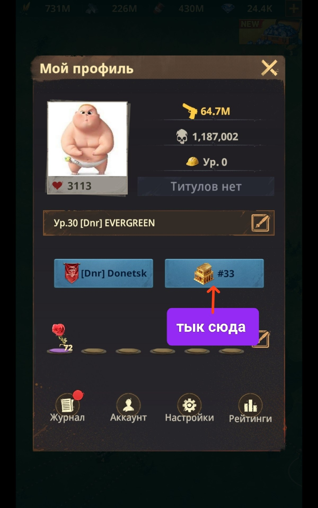
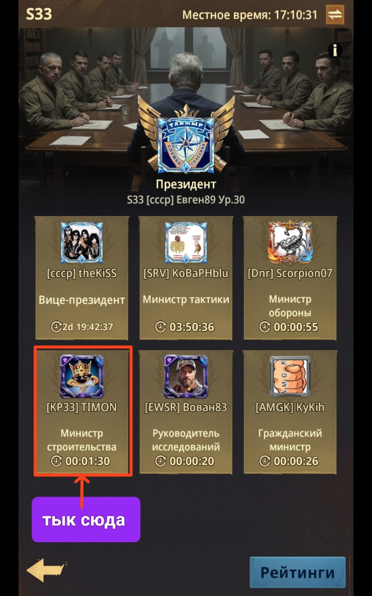
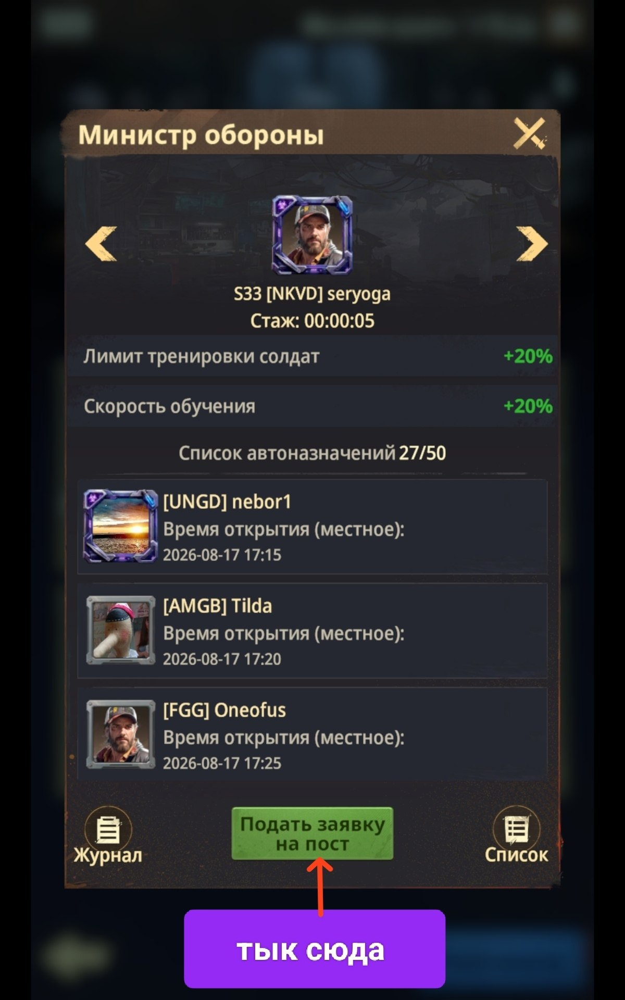
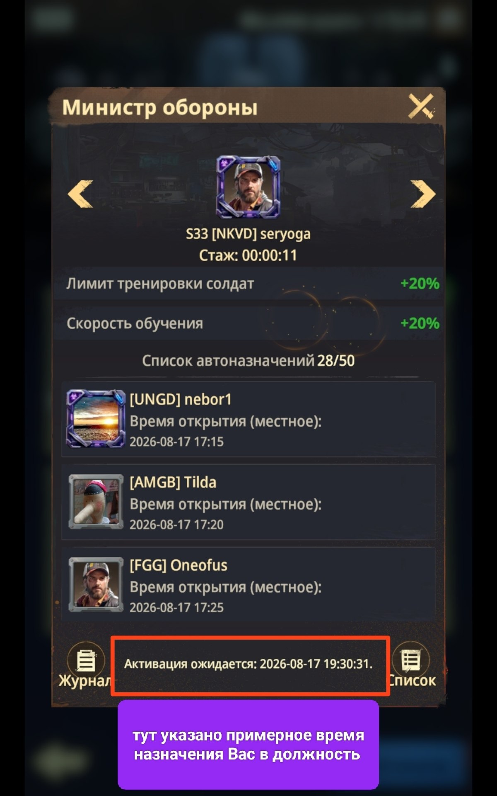

Строительство базы в Z Route: Redemption
🏗️ Строительство Рекомендация - строить/улучшать лишь те здания, которые необходимы для повышения уровня Базы. Всё показано на таблице-скрине ниже - это быстрейший путь развития. Но также, если вы этого желаете, можете улучшать здания, которые сочтёте нужным.
👔 Министр строительства / Гражданский министр Не забывайте каждый раз перед началом стройки использовать должность «Министра строительства» или «Гражданского министра», чтобы ещё больше сократить время постройки.
🔁 Последовательность действий с должностями 1️⃣ Встаёте в очередь на необходимую должность 2️⃣ Дожидаетесь своего назначения на должность 3️⃣ И только потом запускаете необходимую стройку
⚡ Ускорения Не забывайте скупать все Общие ускорения и ускорения строительства в магазинах Альянса и Испытаний. 💎 А с VIP-магазина - только по необходимости.

📊 Таблица: какое здание и до какого уровня улучшать для перехода на следующий уровень Базы

👤 «Мой профиль» → нажмите на иконку сервера (см. стрелку), чтобы попасть в кабинет министров

🏛️ Кабинет министров - подайте заявку на пост «Министр строительства» (см. выделение)

📝 Нажмите «Подать заявку на пост», чтобы встать в очередь

⏳ Тут указано примерное время вашего назначения на должность